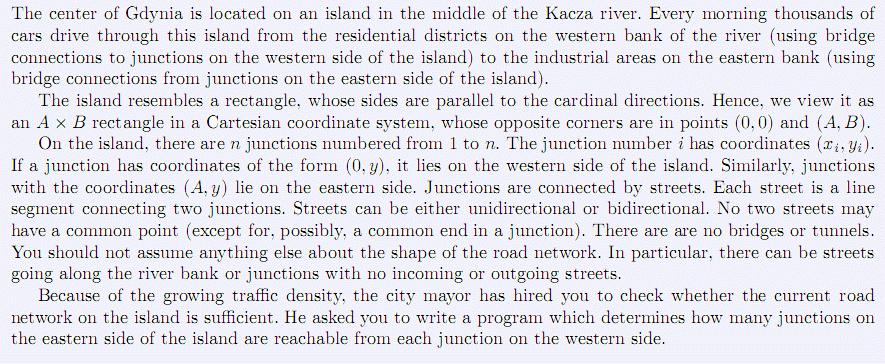

格丁尼亚的中心位于Kacza河中的一座岛屿。每天清晨，成千上万辆汽车通过岛屿从西岸的住宅区（由桥连接岛的
西部）到东岸的工业区（由桥连接岛的东部）。该岛类似于矩形，它的边平行于主方向。故可将它看作是笛卡尔坐
标系中的一个A*B的矩形，它的对角分别为（0, 0）和（A, B）。岛上有n个交通节点，编号为1…n（junction, 此
处可理解为广义的路口），第i个节点坐标为(xi, yi)。如果一个节点的坐标为(0, y)，它就位于岛的西岸。类似
的，坐标为(A, y)的节点位于岛的东岸。各个节点由街道连接，每条街道用线段连接两个节点。街道有单向行驶或
双向行驶之分。除端点外任意两条街道都没有公共点。也没有桥梁或者隧道。你不能对道路网络形状做任何其他假
设。沿河岸的街道或节点可能没有入口或者出口街道。由于交通堵塞日趋严重，市长聘请你测试岛上当前的道路网
是否足够。要求你写一个程序确定从岛的西岸的每个节点能够到达东岸的多少个节点。